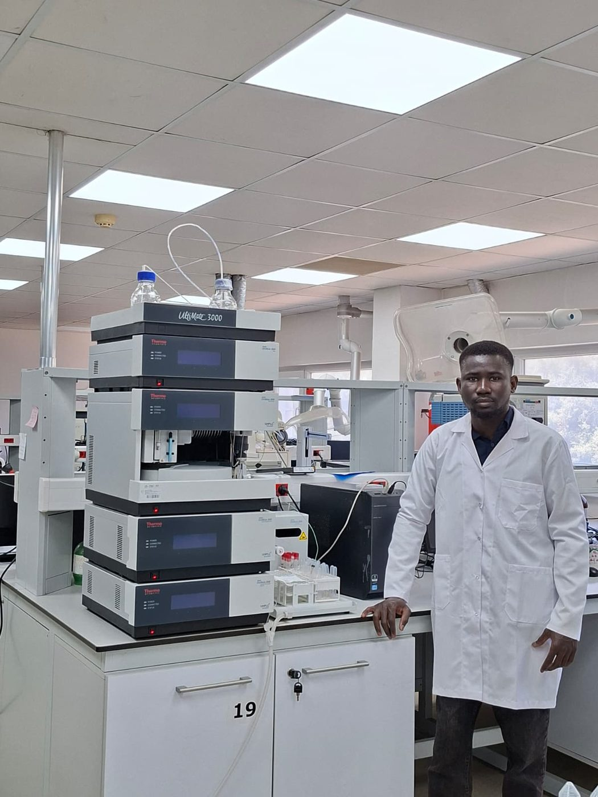

PhD Candidate in Analytical Chemistry, Ege University
Building electrochemical sensors that turn a redox signal into an answer — for heavy metals in water, and for DNA and drug interactions on a modified electrode surface.

Abdoulaye Idrissa Kalidou is a PhD student in Analytical Chemistry at Ege University, Izmir, specializing in electrochemical biosensors for the study of drug and DNA interactions. He holds a Master's degree in Inorganic Chemistry, specialty of Electrochemistry, from Abdou Moumouni University of Niamey, and brings expertise across electrochemistry, instrumental analysis, spectrophotometric methods, and laboratory quality management.
His work has contributed to electrochemical techniques for heavy metal detection in water and environmental samples. He serves as a peer reviewer for the Microchemical Journal and is a member of the International Society of Electrochemistry. Earlier in his career, he coordinated project monitoring and evaluation for REEL Mahita/ENABEL and the National Association of Interprofessional Federation of Milk (ANFILAIT) in Niamey, Niger.
He is fluent in French and Zarma, with working proficiency in English and Turkish, and is a Turkish Government (Türkiye Bursları) scholarship recipient for his doctoral studies.
PhD Student, Analytical Chemistry
Ege University, Izmir
Graduate School of Health Sciences
Evaluation of Electrochemical Techniques for Heavy Metal Detection in Aqueous Media
doi.org/10.52460/issc.2025.052Review on Electrochemical Techniques for Heavy Metal Detection in Aqueous Media
Electrochemical determination of Hg(II) on a poly(Eriochrome blue black R) modified carbon paste electrode
doi.org/10.9734/irjpac/2023/v24i1801